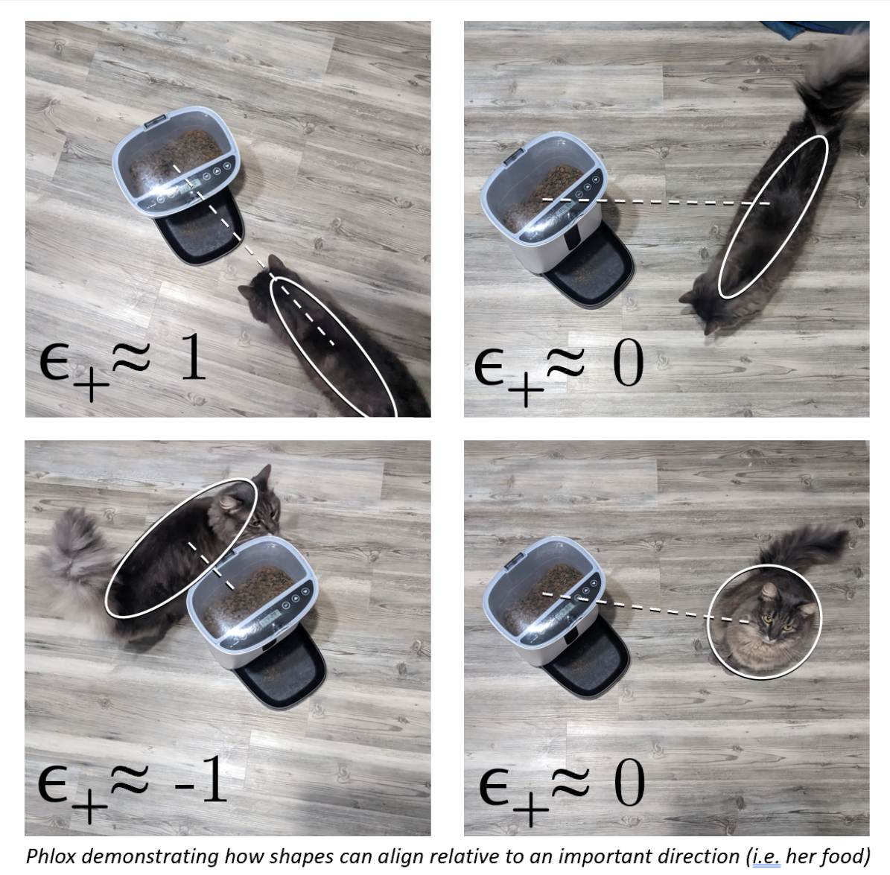

Intrinsic Alignments
See the IA Guide See the IA Cheat Sheet
The large-scale structure of the Universe leaves its mark on visible matter through subtle correlations involving galaxy shapes, galaxy spins, and the underlying cosmic web. These “Intrinsic Alignments” can only be observed with tens of thousands of galaxies. But how do we quantify them? For the long answer, see “The IA Guide”, now on arXiv! For the short answer, keep reading.
Individual galaxies are beautifully unique and complex objects. But as an observational cosmologist, I see them as millions of flat ovals on the sky. Each galaxy can be described by a number, ellipticity, which contains information about how round the galaxy is and its orientation.
We explore how these shapes correlate with other properties by measuring them relative to some direction, such as another galaxy or dense regions of the cosmic web. My cat kindly agreed to demonstrate various ellipticities relative to the most important direction, her food.
Simulations tell us that, statistically, galaxy shapes have “intrinsic alignment” relative to clusters and filaments in the cosmic web. But the large-scale structure of the Universe also systematically distorts the light of galaxies, known as “weak lensing”. This is like the distortion you see in galaxy shapes in the JWST deep field, except very subtle.
There are many correlations involving galaxy shapes, positions, and lensing. It`s important to untangle them in order to get accurate cosmological information out of weak lensing observations and other surveys. It also can be used to directly explore cosmology by studying the imprint that cosmological effects have on Intrinsic Alignments.
It`s tricky to keep track of the different ways to quantify these correlations! There are many estimators, depending on what information you`re interested in and what data you`re working with. Therefore, a group of other early career scientists and myself put together The IA Guide. The IA Guide contains a collection of IA formalisms, estimators, modeling approaches, alternative notations, and useful references. We hope others find it as useful as we do!